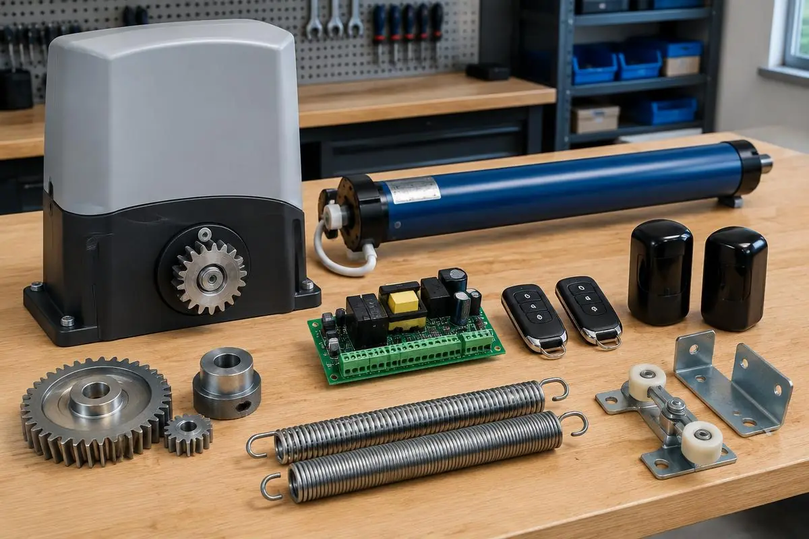

صيانة وتصليح أبواب الكراجات الكهربائية
فحص وضبط وإصلاح أبواب الكراج المقطعية والقلابة، ومعالجة الصوت المزعج والتوقف المفاجئ.
اقرأ المزيد
أبواب الممتاز للأبواب الأوتوماتيكية: صيانة أبواب الكراج وتصليحها، تركيب أبواب الرول والشتر، الأبواب السحاب والمفصلية، إصلاح الدينمو والمحركات، وتوفير قطع الغيار الأصلية للمنازل والمحلات والمصانع.
من باب كراج المنزل إلى أبواب المستودعات الكبيرة، نقدم حلول التركيب والصيانة والإصلاح بخبرة فنية وقطع موثوقة.
فحص وضبط وإصلاح أبواب الكراج المقطعية والقلابة، ومعالجة الصوت المزعج والتوقف المفاجئ.
اقرأ المزيدتركيب أبواب رول جديدة وصيانة الشرائح والمحاور والمجاري للمحلات والمستودعات.
اقرأ المزيدإصلاح أبواب الشتر الكهربائية واليدوية وأبواب البايكات وإعادتها للعمل بسلاسة.
اقرأ المزيدصيانة دورية وطارئة للأبواب الصناعية الكبيرة في المحطات والمصانع والمستودعات.
اقرأ المزيدتركيب محرك باب سحاب وضبط الجنزير والمسار والحساسات لأبواب الفلل والمباني.
اقرأ المزيدتركيب وصيانة ذراع الباب المفصلي للأبواب ذات الضلفة الواحدة أو الضلفتين.
اقرأ المزيدتصليح دينمو باب الكراج وماكينة سحب الأبواب وتغيير التروس والمكثفات.
اقرأ المزيدتشخيص أعطال محركات الأبواب بأنواعها وإصلاحها أو استبدالها بالبديل المناسب.
اقرأ المزيدبرمجة الريموتات وإصلاح لوحات التحكم وضبط حساسات الأمان والفوتوسل.
اقرأ المزيدمحركات وكروت تحكم وريموتات وتروس وزنبركات أصلية متوافقة مع بابك.
اقرأ المزيدفي أبواب الممتاز للأبواب الأوتوماتيكية نهتم بأن يعمل بابك الأوتوماتيكي بأمان وهدوء كل يوم. نتعامل مع أعطال الأبواب الكهربائية بمنهجية واضحة: نستمع لوصفك للمشكلة، ونفحص الباب في موقعه، ثم نقترح الحل الأنسب سواء كان ضبطاً بسيطاً أو إصلاحاً للمحرك أو تغييراً لقطعة تالفة.
إذا كنت تبحث عن صيانة أبواب الكراج في خميس مشيط أو صيانة أبواب الكراج في أبها، أو تحتاج إلى تركيب باب رول لمحلك أو محرك لباب سحاب في فيلتك، فنحن نغطي هذه الخدمات في المدينتين.

فريق يعمل على الأبواب الأوتوماتيكية بأنواعها السكنية والتجارية والصناعية.
نحدد سبب العطل ونوضح لك الحل المناسب قبل البدء في أي إصلاح أو تغيير.
نستخدم قطعاً أصلية متوافقة مع نوع المحرك والباب لضمان تشغيل مستقر.
نصل إلى أحياء خميس مشيط وأبها لتنفيذ التركيب والصيانة في موقعك.
خطوات بسيطة وواضحة من أول تواصل حتى تسليم الباب جاهزاً للعمل.
اتصل أو أرسل رسالة واتساب مع وصف للمشكلة وصورة للباب إن أمكن.
يفحص الفني المحرك واللوحة والحساسات والأجزاء الميكانيكية لتحديد العطل.
نصلح العطل أو نركب القطعة المطلوبة بعد الاتفاق معك على الحل.
نختبر الفتح والإغلاق والريموت وحساسات الأمان قبل تسليم الباب.
جودة القطعة تحدد عمر الإصلاح. لذلك نوفر قطع غيار أبواب كراج أصلية وقطع غيار للأبواب السحاب والرول والمفصلية، ونختار القطعة المتوافقة مع نوع المحرك وقدرته ووزن الباب.

نماذج لأنواع الأبواب الأوتوماتيكية والمحركات وقطع الغيار التي نتعامل معها.
نصل إليكم في أحياء المدينتين لتنفيذ تركيب وصيانة الأبواب الأوتوماتيكية في الموقع.
صيانة أبواب الكراج والرول والسحاب في أحياء خميس مشيط، ومنها:
تصليح وتركيب الأبواب الأوتوماتيكية في أحياء أبها، ومنها:
نقدم خدماتنا في مدينتي خميس مشيط وأبها وأحيائهما المختلفة، ويمكنكم الاطلاع على قائمة الأحياء في قسم مناطق الخدمة أو التواصل معنا للتأكد من موقعكم.
نتعامل مع أبواب الكراجات الكهربائية، وأبواب الرول والشتر للمحلات والبايكات، والأبواب السحاب، والأبواب المفصلية بأذرعة التشغيل، وأبواب المحطات والمصانع والمستودعات.
نبدأ بفحص الدينمو أو المحرك وتحديد سبب العطل، فكثير من الأعطال تُحل بإصلاح التروس أو المكثف أو لوحة التحكم دون الحاجة لتغيير المحرك كاملاً، وإذا كان الاستبدال هو الحل الأنسب نوضح ذلك لكم قبل التنفيذ.
نعم، نوفر قطع غيار أصلية للأبواب الأوتوماتيكية مثل المحركات ولوحات التحكم والريموتات والحساسات والتروس والزنبركات، ونختار القطعة المتوافقة مع نوع بابكم.
يمكنكم الاتصال مباشرة على الرقم 0508602728 أو مراسلتنا عبر واتساب مع وصف المشكلة وصورة للباب إن أمكن، وسنرتب معكم موعد الزيارة.
افصل الكهرباء عن الباب وتجنب تحريكه بالقوة، ثم تأكد من بطارية الريموت وعدم وجود عائق أمام الحساسات، وإذا استمرت المشكلة تواصل معنا لفحص المحرك ولوحة التحكم بأمان.
تواصل الآن مع أبواب الممتاز في خميس مشيط وأبها.